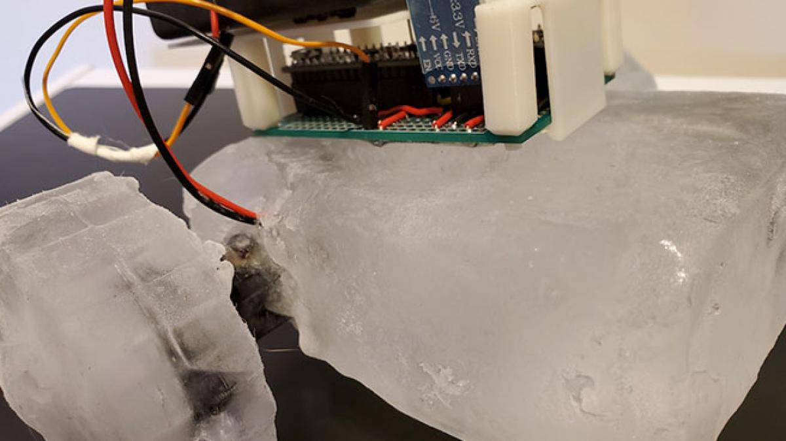

Datos
Formulario
ESCOM
formulario
|
Datos personales:
|
Benitez Merino Leonardo Jonathan
14 de novimebre de 1998
22 años
Azcapotzalco,Ciudad de Mexico
lbenitezm0104@alumno.ipn.mx
Escorpio
Tobi
@TobiPOV
Leo Merino
JonathanBmer
|

|
Datos Escolares
CET 1 "Walter Cross Buchanans"
Promedio: 7.0
Escuela Superior de computo
Promedio: 8.4
Primer semestre
- Fundamentos de programacion
- Matematicas discretas
- Comunicacion oral y escrita
- Calculo
- Mecanica y electromagnetismo
- Fundamentos economicos
Segundo semestre
- Algoritmos y estructura de datos
- Algebra lineal
- Fundamentos de diseño digital
- Calculo multivariable
- Ingenieria, etica y sociedad
- Finanzas empresariales
Tercer semestre
- Analisis y diseño de algoritmos
- Paradigmas de Programacion
- Ecuaciones diferenciales
- Bases de datos
- Diseño de sistemas digitales
- Liderazgo personal
Promedio General: 8.4
|
Noticia de tecnologia 1
El prototipo de robot desarrollado por el laboratorio GRASP de la Universidad de Pensilvania en Filadelfia. Lo han bautizado como IceBot porque, fundamentalmente, está hecho de hielo. Y bajo tres premisas fundamentales: un dispositivo autorreconfigurable, autorreplicable y autorreparable.

Visita Imnovation
Noticia de tecnologia 2
Suena descabellado, pero lo cierto es que los sistemas de software de inteligencia artificial (IA) -los programas de computadora que pueden actualizarse y "pensar" por sí solos- están siendo cada vez más utilizados en el entorno legal.
Joshua Browder describe su aplicación DoNotPay como "el primer abogado robot del mundo".
Visita BBC
Noticia de tecnologia 3
En menos de siete días, la tecnológica ha anunciado dos acuerdos que le permiten dar carpetazo a investigaciones por monopolio en su tienda de aplicaciones. Eso sí, concediendo lo justo y manteniendo las limitaciones para los creadores de las 'apps' que representan la mayoría de sus ingresos..

Visita ABC
|